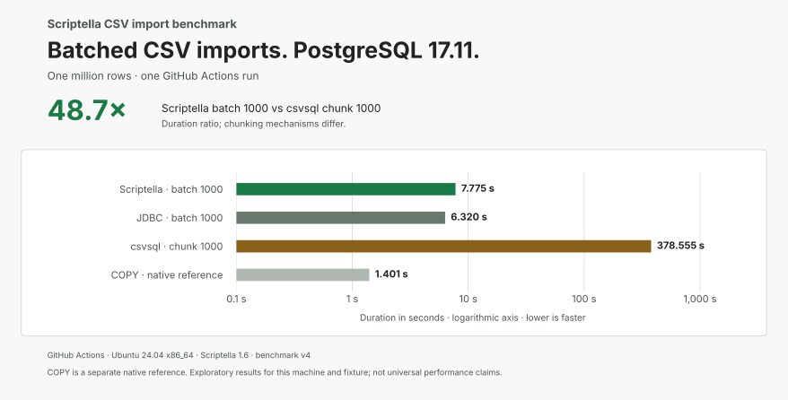
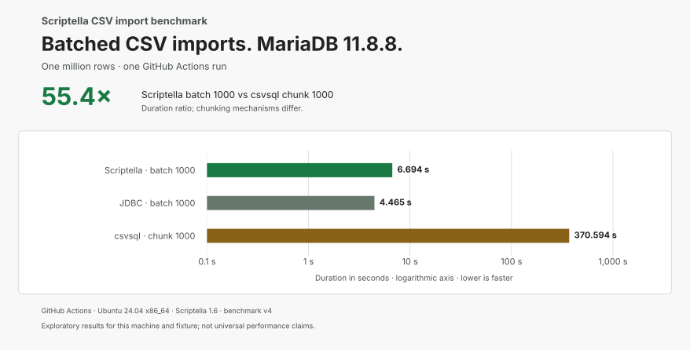

CSV import benchmarks
For practical configuration advice, see the batching and insert performance guide, covering PostgreSQL and MariaDB driver settings, batch sizes, and transaction boundaries.
One million rows, two databases, and a reproducible comparison of Scriptella 1.6, handwritten JDBC, and csvsql.
Batched Scriptella imported the fixture in 7.775 seconds on PostgreSQL and 6.694 seconds on MariaDB in one GitHub Actions run. Handwritten JDBC was faster; csvsql’s tested direct-import workflow took about 6 minutes.
These are exploratory results for this workload and environment. JDBC batching and csvsql chunking use different mechanisms; PostgreSQL COPY is a database-specific reference.
Benchmark v4 results
The full v4 comparison, including csvsql, completed successfully on October 21, 2026. The charts show single observations from that Ubuntu 24.04 x86_64 run. Lower is faster.


Benchmark v4, Scriptella 1.6. PostgreSQL explicitly enables reWriteBatchedInserts=true for both Scriptella and handwritten JDBC; MariaDB uses driver defaults. Scriptella’s general adapter default is unchanged. These are single observations, not repeated-run medians. RAM was not measured.
See the full v4 results and environment details, including all eleven cases, unbatched imports, and raw measurements, and the successful CI run.
About the comparison
All import paths load the same CSV into a pre-created table, with one transaction per import and no indexes or transformations. Timings include client startup, parsing, insertion, and commit; setup and verification are excluded. Every measured import passed independent row-count and sampled-value checks.
The experiment uses Scriptella 1.6, Java 17, csvsql 2.2.0, PostgreSQL 17.11 with pgJDBC 42.7.13, and MariaDB 11.8.8 with Connector/J 3.5.7. Database durability uses normal defaults. See the methodology and limitations for the full comparison.
GitHub-hosted hardware and load vary between runs. These results do not establish an improvement over historical measurements. A separate repeated local comparison of PostgreSQL batch rewriting measures the effect of that setting with rewriting off and on.
Historical results
Earlier benchmark definitions and environments are documented separately: v3 CI results, v2 CI results, and v2 local results. Results from different versions and environments are not pooled.
Run it yourself
The benchmark runs with Docker Compose and includes all dependencies. The repository instructions cover running the comparison, inspecting results, and repeating it on your own hardware.